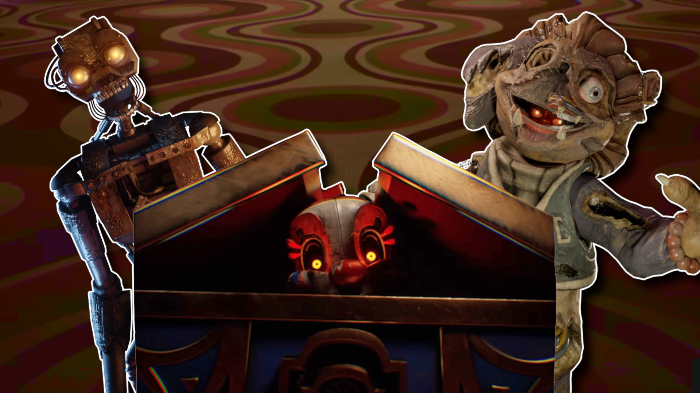

Five Nights at Freddy's Secret of The Mimic é o décimo segundo jogo de terror da franquia Five Nights at Freddy's que está a ser desenvolvido por Steel Wool Studios.
O jogo ganhou bastante atenção e expectativas ao ser anunciado próximo ao 10º aniversário da franquia. Um teaser trailer também foi lançado, aumentando ainda mais o entusiasmo dos fãs.
O jogo é ambientado em 1979, marcando o ponto mais antigo na linha do tempo da franquia. Ele explora as origens do personagem Mimic, um endoesqueleto experimental que apareceu pela primeira vez na série de livros "Tales from the Pizzaplex" e mais tarde na DLC Ruin de FNAF Security Breach. O Mimic foi criado por Edwin Murray para cuidar de seu filho, David, replicando qualquer movimento que visse. Após a morte de David em um acidente de carro, Edwin, em um acesso de raiva e luto, destruiu o Mimic com um tubo de metal, infundindo-o com sua agonia, o que tornou o robô extremamente violento.
Segundo alguns youtubers que foram convidados ao estúdio para testar o jogo, gravando apenas a reação sem mostrar o jogo, ao que parece, tal como Help Wanted e Help Wanted 2, será um jogo em realidade virtual.